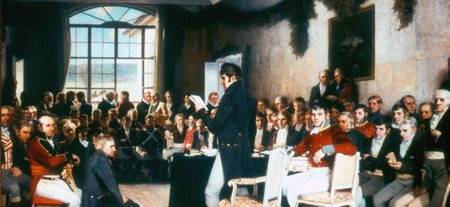

A Short History of Norway

Compared to Great Britain, Norway is considered a "young" country. Having been in union with Denmark, then Sweden for several centuries, Norway became an independent country again in 1905. This meant it was able to choose its own king, and elect its own government. Norwegians today are a strong and patriotic people who are very proud of their country and its achievements.
People first settled in Norway around 10 000 years ago. They first survived by hunting and fishing, but gradually began to farm the land and to keep livestock. The first farms were created around 500 BC. This period is known as the Bronze Age, since bronze was the metal used to create weapons, jewellery and tools.
The Bronze Age was followed by the Iron Age, which lasted until around 1000 AD. During this time, better tools were made and trade grew. The Viking Age lasted from around 800 to 1030 AD and was certainly an eventful chapter in Norwegian history! The Vikings built fast, ocean-going ships and travelled across the world raiding countries for their treasures and resources. However, many Vikings settled abroad, and as well as being skilled sailors and explorers, they became traders who set up communities in foreign lands.
Around the year 1030, the lands of Norway were made into one kingdom and Christianity was introduced. By the 13th century, Norway ruled over other countries including Iceland, Greenland, Shetland, the Faeroes and the Orkney Islands. This rule, known as the Norwegian empire, lasted until around 1350 when the plague known as the Black Death wiped out more than half of Norway’s population.
From 1380 until 1814 Norway was in a union with Denmark. When the union ended, it wrote its own national constitution. Later that year, Norway entered into a new union with Sweden which lasted until 1905. Norway was then able to choose its own king, and Prince Carl of Denmark, who became known as King Haakon VII, became the first ruler of an independent Norway for 525 years.
During World War II, Norway was under German occupation. Britain was one of Norway's allies and King Haakon and his family lived in exile in the UK until the war was over. Norway is a peace-loving nation and is a member of the United Nations (UN) and NATO. Norway's belief in negotiation as a way of settling conflict makes them the ideal country to award the Nobel Peace Prize each year.
In the late 1960s, enormous fields of oil and gas were discovered off the Norwegian coast. This has had a huge effect on the country's economy and for the last eight years, Norway has been voted the best country in the world to live in by the UN.
Back to topDid You Know?
25 000 years ago, Norway was covered by nearly 4,000 metres of ice, which took almost 18 000 years to melt!